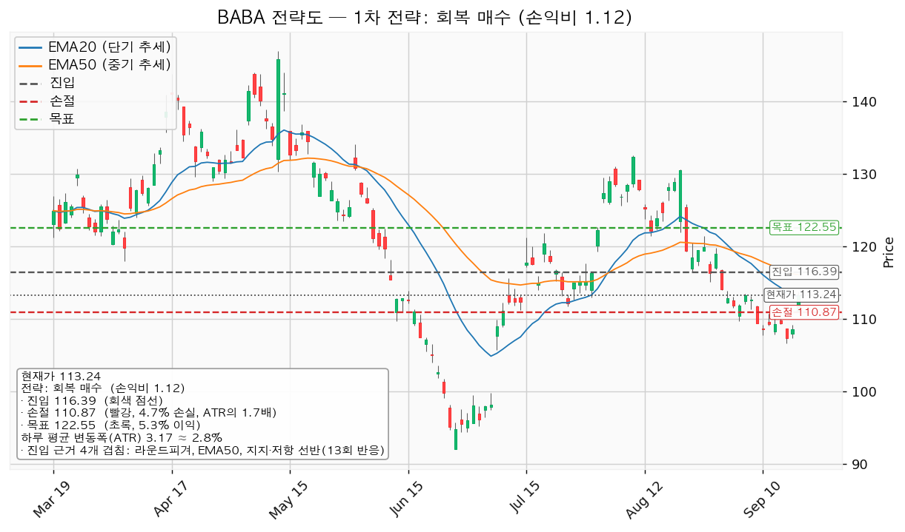
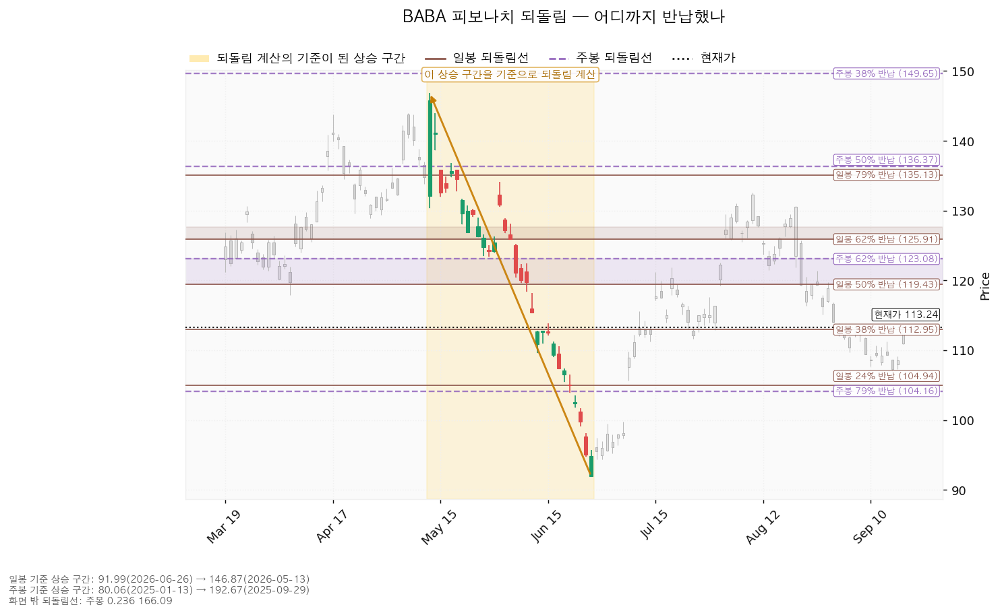
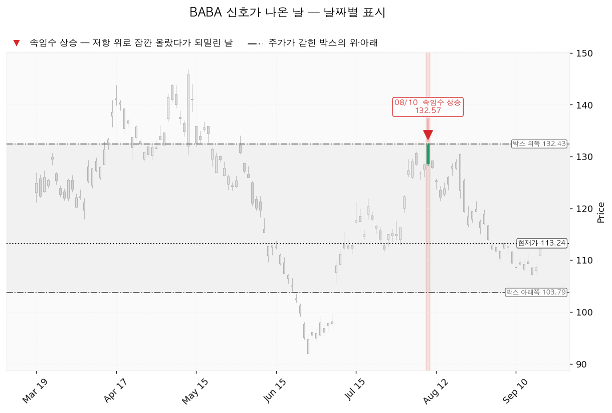
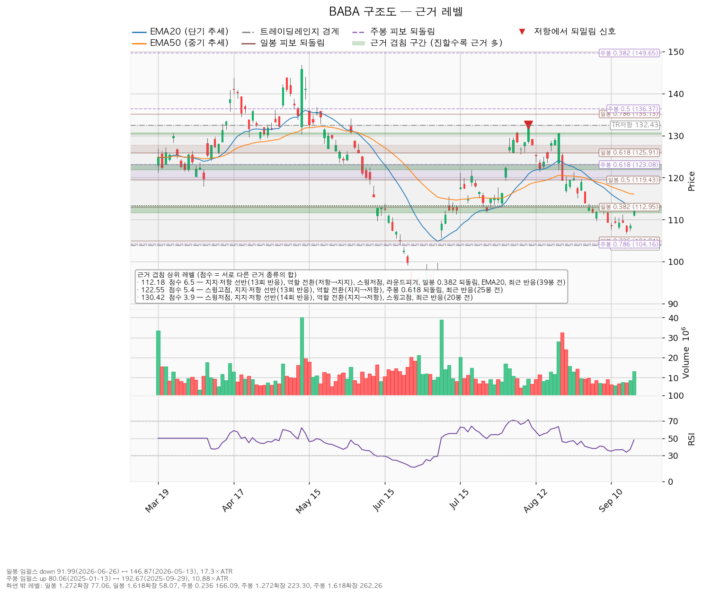

알리바바(BABA)는 중국의 전자상거래 플랫폼(타오바오·티몰·알리익스프레스)과 클라우드 컴퓨팅, 물류·디지털 결제 사업을 운영하는 기업입니다. 미국 증시에는 주식예탁증서(ADR) 형태로 상장돼 있습니다.
기준 가격은 9월 18일 종가 113.24달러, 하루 평균 변동폭(ATR)은 3.17달러입니다. 보유분은 7월 1일 체결된 8주이고 평단은 157.736달러입니다.
| 구분 | 가격 | 판정 방식 | 현재가 대비 | 상태 |
|---|---|---|---|---|
| 회복선(진입 조건) | 116.39달러 | 일봉 종가로 회복한 뒤 되돌림에서 지지되는지 | +2.78% (하루 평균 변동폭의 0.99배) | 회복 대기 |
| 집행 손절 | 110.87달러 | 도달 시 즉시 청산 — 116.39달러 회복 후 새로 진입한 경우에만 작동합니다. 미진입 상태에서는 무의미합니다 | -2.09% (0.75배) | 미진입 시 무의미 |
| 관망 종료 기준 | 111.66달러 | 일봉 종가가 아래로 마감 / 또는 2026-11-24 실적 | -1.40% (0.50배) | 유효 — 9월 18일에도 이 자리에서 반응 |
| 확인선 | 122.55달러 | 일봉 종가 돌파 후 되돌림에서 지지 확인 | +8.22% (2.94배) | 미돌파 |
| 폐기선(구조) | 103.79달러 | 이탈 후 3거래일 내 종가 회복 실패(또는 그 전에 100.62달러 아래 종가 마감) + 반등에서 저항으로 확인 | -8.35% (2.98배) | 유지 중 |
폐기선 103.79달러는 현재가에서 하루 평균 변동폭의 2.98배 아래입니다. 3배 안쪽이므로 무효화 기준으로 작동은 하지만, 그 거리까지 가려면 열흘 넘는 하락이 필요하므로 미진입자가 매일 실제로 볼 선은 관망 종료 기준 111.66달러입니다.
확인선 122.55달러는 대표 셋업의 목표와 같은 가격이며, 두 갈래로 씁니다. 그 자리에서 막히고 되밀리면 목표 도달이므로 전량 청산이고, 일봉 종가로 넘어서면 상승 확정이므로 그때는 새 셋업으로 다시 잡습니다. 박스 상단 132.43달러는 그 위의 맥락으로만 적습니다.
| 항목 | 값 |
|---|---|
| 현재가(9월 18일 종가) | 113.24달러 |
| EMA20 / EMA50 | 113.14달러 / 116.06달러 |
| RSI(14) | 48.0 |
| ATR(하루 평균 변동폭) | 3.17달러 (주가의 2.80%) |
| 횡보 박스 | 103.79~132.43달러 (유효, 90봉 기준) |
| 박스 내 현재 위치 | 아래에서 33.0% 지점 |
| 국면 | 횡보 레인지(구조 유지 — 하단 사수 조건부) |
용어: EMA20·EMA50은 최근 20일·50일 평균 가격을 요즘 값에 가중치를 더 줘서 계산한 선입니다. RSI(14)는 최근 14일 상승폭과 하락폭의 비율을 0~100으로 나타낸 값으로, 50이 중립입니다. ATR은 하루에 평균 얼마나 움직이는지를 나타낸 폭입니다.
현재가 113.24달러는 EMA20(113.14달러) 바로 위, EMA50(116.06달러) 아래입니다. RSI 48.0은 중립입니다.
박스 판정은 753일치 일봉 중 90봉 창을 골라 내린 것입니다. 40·90·180봉을 모두 시험한 성적은 아래와 같습니다.
| 창 | 가격이 박스 안에 머문 비율 | 추세 기울기 | 박스 폭(ATR 배수) | 유효 |
|---|---|---|---|---|
| 40봉 | 47.5% | 0.915 | 4.21배 | 아니오 |
| 90봉 | 81.1% | 0.172 | 9.03배 | 예 |
| 180봉 | 94.4% | 0.487 | 23.52배 | 아니오 |
40봉은 가격이 절반도 담기지 않았고 180봉은 박스가 ATR의 23배로 너무 넓어, 90봉치 횡보를 본 것입니다.
직전 구간은 122.55~178.38달러의 추세·확장 구간이었고, 가격이 위에서 아래로 내려와 지금 박스로 들어왔습니다. 위에서 내려온 박스는 매집과 재분산이 같은 사각형을 그리므로, 판단 근거는 박스 안쪽의 거래량과 저점 흐름입니다.
| 관측 항목 | 값 | 방향 |
|---|---|---|
| 지지 테스트 거래량 추세 | 감소 (6/26 평소의 1.45배 → 9/10 0.52배 → 9/14 0.56배 → 9/16 0.61배) | 매집 쪽 |
| 박스 내 저점 흐름 | 절하 | 재분산 쪽 |
| 상승봉 대 하락봉 거래량비 | 1.14배 | 매집 쪽(약함) |
판정은 중립이고 국면 후보도 미확정입니다. 아래를 시험할 때 파는 힘은 줄어드는데 저점은 계속 낮아지고 있어, 어느 쪽 우위로도 결론이 나지 않았습니다. 이 미확정이 이번 리포트가 진입을 116.39달러 종가 회복 이후로 미루는 이유입니다.
산출된 셋업은 하나뿐입니다. 하락·중립 국면이므로 되돌림 저가매수는 나오지 않고, 저항을 종가로 되찾을 때만 롱으로 전환하는 계획입니다.
| 항목 | 내용 |
|---|---|
| 셋업 | reclaim_long (저항 회복 매수) |
| 구조 증명도 | 회복 확인형 (증명도 1.0 — 저항을 종가로 되찾은 뒤에만 진입하므로 진입가는 불리하나 구조가 먼저 증명됩니다) |
| 진입 | 116.39달러 (일봉 종가 회복 확인 후) |
| 진입 근거 겹침 | 3.8점 / 4개 — 라운드피겨(116·118처럼 딱 떨어지는 가격), EMA50, 지지·저항 선반(13회 반응), 역할 전환(저항→지지). 겹침 띠는 116.00~116.76달러 |
| 손절 | 110.87달러 — 근거 겹침 구간(111.66~113.14달러, 6.5점) 바로 아래로 밀어낸 값입니다 |
| 목표 | 122.55달러 |
| 목표 근거 겹침 | 5.4점 / 5개 — 스윙고점, 지지·저항 선반(13회 반응), 역할 전환(지지→저항), 주봉 0.618 되돌림, 최근 반응(25봉 전). 겹침 띠는 121.86~123.08달러 |
| 손익비 | 1:1.12 (손절 폭 5.52달러 = 1.74 ATR = 진입가의 4.75%) |
| 엣지의 종류 | 모멘텀 — "저항을 종가로 되찾으면 그 방향이 이어진다"는 전제 |
| 유형의 성격 | 자주 틀리고 소수가 크게 맞는 유형입니다(이 유형의 일반적 성격이며 이번 분석에서 측정한 값이 아니므로 승률 수치를 붙이지 않습니다) |
| 청산 | 목표 122.55달러에서 전량. 트레일링 없음 |
대표 셋업 선정 이유: 손익비 1.12 × 구조 증명도(회복 확인형) × 근거 겹침 3.8점으로 선정했습니다. 다른 셋업이 산출되지 않았으므로 손익비 1등과 대표가 갈리는 트레이드오프는 이번에 발생하지 않았습니다.
손절 위치: 손절 110.87달러는 111.66~113.14달러 겹침 구간(6.5점, 이 종목에서 가장 두꺼운 근거 구간) 안쪽이 아니라 그 아래에 두었습니다. 구간 안쪽에 두면 손익비가 좋아 보이지만 지지 구간에서 흔들리는 움직임에 그대로 잘려 나갑니다. 손익비 1:1.12는 그렇게 밀어낸 손절을 기준으로 계산한 값입니다. 구조적 손절 기준 손익비가 따로 산출되지 않은 것은 이 손절이 이미 구조 기준이기 때문입니다.
분할하지 않는 이유: T1 118.28달러에서 절반 익절하고 잔여 손절을 진입가 116.39달러로 올리는 안도 함께 계산했습니다. 그 경우 T1 구간 손익비가 1:0.34, 전 구간 합산이 1:0.73, 본전 손절로 끝날 때의 하한이 1:0.17로 떨어집니다. 진입에서 목표까지가 6.16달러(1.94 ATR)로 하루 평균 변동폭 2배에 못 미치므로 나눌 폭이 없습니다(이 2배 기준은 관행이지 정설은 아닙니다). 122.55달러 단일 청산으로 끝냅니다.
모멘텀 전제에 고정 목표를 붙인 조합입니다. 진입 근거는 돌파 모멘텀인데 집행은 레인지 규칙(저항에서 전량 청산)을 따릅니다. 폭이 1.94 ATR뿐이라 트레일링으로 위를 열어 둘 여지가 없어 이렇게 냅니다. 122.55달러를 일봉 종가로 넘어서는 구간은 이 포지션의 연장이 아니라 새 셋업으로 다시 계산합니다.
추격 여부: 현재가 추격 비권장에 해당하지 않습니다. 진입가 116.39달러가 현재가보다 +2.78%(0.99 ATR) 위에 있어, 기다렸다가 확인 후 사는 계획입니다.

1회 매매에서 계좌의 1%를 잃는 것을 한도로 두면, 손절 폭 4.75%에서 계산되는 포지션 크기는 계좌의 21.1%입니다. 한 종목에 계좌의 13%를 넘게 싣지 않는 원칙에 따라 13%로 제한합니다. 13%로 줄이면 그 매매의 손실 한도는 계좌의 약 0.62%가 됩니다.
이 13%에는 이미 보유 중인 8주(9월 18일 종가 기준 905.92달러)가 포함됩니다. 보유분을 빼고 남는 만큼만 116.39달러에서 채우십시오.
집행 손절 110.87달러는 아래 판정과 무관하게 별도로 작동합니다. 장중 일시 이탈은 어느 단계에도 해당하지 않습니다.
| 단계 | 트리거 | 의미 | 행동 |
|---|---|---|---|
| ① 관찰 | 일봉 종가가 116.39달러 아래로 마감 | 구조 이탈 시작 — 되돌아 올라오면 속임수 하락(spring)일 수 있어 아직 무효가 아닙니다 | 신규 진입만 중단. 집행 손절은 그대로 둡니다 |
| ② 경고 | 이탈 후 3거래일 안에 116.39달러를 종가로 회복하지 못함, 또는 그 전에 일봉 종가가 113.22달러 아래로 마감(하루 평균 변동폭의 1배만큼 더 밀림) — 둘 중 먼저 오는 쪽 | 저항 회복 실패 가능성이 우세해집니다 | 잔여 비중 축소. 반등이 나오면 이 가격에서의 반응을 확인합니다 |
| ③ 무효 | 반등이 116.39달러에서 막히고 그 아래로 되밀림(지지가 저항으로 전환) | 셋업 폐기 — 구조 해석이 틀린 것으로 확정 | 포지션 정리. 새 구조가 만들어질 때까지 관망 |
셋업 무효화선(116.39달러)과 시나리오 폐기선(103.79달러)은 다른 가격입니다. 앞은 진입 근거가 깨지는 자리이고, 뒤는 박스 자체가 깨지는 자리입니다.
① 상승 전환 조건은 116.39달러 종가 회복 후 지지 → 122.55달러 종가 돌파입니다. 구조로는 아래를 한 번 속이고 올라오는 움직임(속임수 하락) 확인 → 매수세가 드러나는 상승(강세 신호) → 그 위에서 눌렸을 때 지지 확인 → 상승 국면 순서입니다. 행동은 116.39달러 회복·지지 확인 후 분할 진입, 122.55달러 돌파 시 비중 확대입니다.
② 횡보 지속 조건은 103.79달러를 지키며 122.55달러 아래 박스를 유지하는 것입니다. 구조는 유지되며 매물 소화에 시간이 필요한 국면입니다(부정 신호가 아닙니다). 신규 진입은 보류하고 아래 세 가지를 추적합니다 — 지지 테스트마다 매도 거래량이 줄어드는지(현재: 감소 중), 저점이 절상되는지(현재: 절하), 상승할 때 거래량과 캔들 폭이 확대되는지(현재: 상승봉/하락봉 거래량비 1.14배). 세 항목 중 저점 절하가 뒤집혀 절상으로 바뀌면 매집 쪽으로 판정이 기웁니다.
③ 시나리오 폐기 조건은 103.79달러 이탈 후 3거래일 내 회복 실패(또는 그 전에 100.62달러 아래 종가 마감) + 반등에서 저항으로 확인입니다. 그 경우 박스는 매집이 아니라 재분산이었던 것이고, 추가 저점 갱신 가능성이 열립니다. 행동은 포지션 정리 후 새 매도 절정과 새 박스가 만들어질 때까지 관망입니다.
일봉·주봉 되돌림선이 모두 계산됐습니다.
| 기준 | 구간 | 방향 | 주요 되돌림선 |
|---|---|---|---|
| 일봉 | 2026-05-13 146.87달러 → 2026-06-26 91.99달러 | 하락 | 0.236 = 104.94 / 0.382 = 112.95 / 0.5 = 119.43 / 0.618 = 125.91 / 0.786 = 135.13달러 |
| 주봉 | 2025-01-13 80.06달러 → 2025-09-29 192.67달러 | 상승 | 0.5 = 136.37 / 0.618 = 123.08 / 0.786 = 104.16달러 |
현재가 113.24달러는 5~6월 하락분의 38.7%를 되돌린 자리이며, 일봉 0.382 되돌림선(112.95달러) 바로 위입니다. 주봉으로 보면 2025년 1월~9월 상승분의 0.618(123.08달러)과 0.786(104.16달러) 사이에 있습니다. 확인선 122.55달러가 주봉 되돌림의 핵심 구간(119.47~123.08달러) 상단과 겹치는 것이 그 자리를 목표로 삼은 이유 중 하나입니다.

| 날짜 | 신호 | 가격 | 해석 |
|---|---|---|---|
| 2026-08-10 | upthrust(위쪽 속임수 돌파) | 132.57달러 | 박스 상단을 잠깐 넘겼다가 되밀린 자리입니다. 이후 가격은 박스 안으로 돌아왔고 아직 다시 시험하지 않았습니다 |
박스 안에서 아래쪽 신호(속임수 하락·강세 신호)는 아직 나오지 않았습니다. 국면 후보가 미확정으로 남아 있는 것도 이 때문입니다.

점수는 서로 다른 근거 종류의 가중치 합입니다. 같은 종류가 여러 개 붙어도 한 번만 가산됩니다. 스윙고점·스윙저점은 직전에 가격이 방향을 바꾼 고점·저점이고, 역할 전환은 저항이던 가격이 지지로(또는 그 반대로) 바뀐 자리입니다.
| 가격대 | 점수 | 근거 |
|---|---|---|
| 111.66~113.14달러 | 6.5 | 지지·저항 선반(가격이 여러 번 반응한 수평 가격대, 13회 반응), 역할 전환(저항→지지), 스윙저점, 라운드피겨, 일봉 0.382 되돌림, EMA20, 최근 반응(39봉 전) |
| 121.86~123.08달러 | 5.4 | 스윙고점, 지지·저항 선반(13회 반응), 역할 전환(지지→저항), 주봉 0.618 되돌림, 최근 반응(25봉 전) |
| 130.33~130.62달러 | 3.9 | 스윙저점, 지지·저항 선반(14회 반응), 역할 전환(지지→저항), 스윙고점, 최근 반응(20봉 전) |
| 116.00~116.76달러 | 3.8 | 라운드피겨, EMA50, 지지·저항 선반(13회 반응), 역할 전환(저항→지지) |
| 117.85~119.43달러 | 3.8 | 지지·저항 선반(14회 반응), 역할 전환(저항→지지), 라운드피겨, 일봉 0.5 되돌림 |
| 103.79~104.94달러 | 3.7 | 박스 하단, 주봉 0.786 되돌림, 일봉 0.236 되돌림 |
| 128.44~128.95달러 | 3.4 | 지지·저항 선반(14회 반응), 역할 전환(저항→지지), 스윙저점 |
| 132.43~132.57달러 | 2.9 | 박스 상단, 스윙고점, 최근 반응(28봉 전) |
현재가 바로 아래 111.66~113.14달러가 이 종목에서 가장 두꺼운 근거 구간이고, 그 선반은 9월 18일에도 반응한 살아 있는 자리입니다(첫 반응 2024-09-30, 13회 반응, 저항에서 지지로 역할이 바뀐 곳). 관망 종료 기준을 그 구간 하단 111.66달러에 둔 이유이며, 집행 손절 110.87달러를 그보다 아래에 둔 이유이기도 합니다.

| 항목 | 값 |
|---|---|
| 후행 PER / 선행 PER | 25.6배 / 12.2배 |
| 후행 EPS / 선행 EPS | 4.42달러 / 9.26달러 (선행이 후행의 2.09배) |
| 목표주가 평균 | 186.19달러 (+64.4%) |
| 목표주가 최저 / 최고 | 95.50달러 (-15.7%) / 238.96달러 (+111.0%) |
| 애널리스트 수 / 등급 | 39명 / 적극 매수 |
| 올해 추정이익 증가율 | +65.3% |
| 내년 추정이익 증가율 | +40.3% |
| 추정치 90일 변화 | 올해 -2.6% / 내년 -0.4% |
| 다음 실적일 | 2026-11-24 |
(a) 배수는 둘 다 — 후행 25.6배와 선행 12.2배가 두 배 넘게 벌어져 있습니다. 후행 EPS 4.42달러가 선행 9.26달러로 2.09배 늘어나는 것으로 추정되기 때문이며, 후행 25.6배만 보고 비싸다고 판정할 수 없습니다. 선행 12.2배는 올해 +65.3%, 내년 +40.3%로 추정되는 이익 성장률에 비하면 낮은 배수입니다.
(b) 목표주가 분포 — 39명의 평균 186.19달러, 최저 95.50달러, 최고 238.96달러입니다. 현재가 113.24달러는 최저 목표 95.50달러보다 위에 있어, 전원의 목표 아래에 있는 상황은 아닙니다. 다만 최저와 최고가 2.5배 벌어져 있어 평균 하나만 인용할 수 있는 분포가 아닙니다.
(c) 하락의 성격 — 90일간 내년 추정이익은 -0.4%, 올해는 -2.6% 변했습니다. 가격은 5월 고점 146.87달러에서 -22.9% 내렸는데 추정치는 한 자릿수 초반만 내려갔습니다. 하락의 대부분은 배수 수축이고, 추정치 하향은 소폭 동반된 정도입니다. 이 구분 없이 사업이 꺾였다고 적는 것은 맞지 않습니다. 동시에 추정치가 올라가지도 않았으므로, 배수가 다시 벌어질 근거를 가격 구조 밖에서 찾을 수는 없습니다.
(d) 현금흐름의 성격 — 2026-03-31 결산 기준으로 영업현금흐름은 +762.1억, 설비투자는 1,269.4억(직전 859.7억 대비 +47.6%), 잉여현금흐름은 -507.2억입니다(CLI가 통화 단위를 함께 반환하지 않아 단위는 명시하지 않습니다). 영업 단계에서 현금이 빠져나가는 적자가 아니라, 영업은 흑자인데 설비투자가 그보다 앞선 형태입니다. 클라우드·AI 인프라 투자 구간에서 흔한 모양이며, 확인 항목은 그 투자가 언제 이익으로 돌아오는지입니다 — 11월 24일 실적에서 클라우드 부문 매출 증가율과 영업현금흐름을 함께 봐야 합니다.
(e) 상승 여력의 분해 — 평균 목표 186.19달러를 선행 EPS 9.26달러로 나누면 내재 배수가 20.1배입니다. 현재 선행 배수는 12.2배이므로, 선행 이익이 추정대로 나온다는 전제에서 평균 목표까지의 +64.4%는 거의 전부 배수 확장에서 옵니다. 후행 기준으로 보면 다른 그림입니다 — 후행 EPS 4.42달러에서 선행 9.26달러로 이익이 2.09배 늘어나는 동안 배수는 25.6배에서 20.1배로 오히려 줄어듭니다. 12개월 시계에서는 이익 증가가 주된 동력이고, 선행 실적이 이미 반영된 지점부터는 배수 확장이 필요합니다.
주도주 여부 — 아닙니다. 등급은 적극 매수이고 이익 성장률 추정치도 높지만, 가격 구조는 5월 고점에서 내려와 90봉째 박스 안에 갇혀 있고 박스 안 저점은 절하 중입니다. 8월 10일 박스 상단 돌파 시도도 되밀렸습니다. 컨센서스는 12개월 시계, 이 셋업은 수 주 시계이므로 두 결론이 갈리는 것은 모순이 아닙니다. 답은 진입 116.39달러·손절 110.87달러·목표 122.55달러로 냅니다.
ATR 3.17달러는 주가의 2.80%로, 손절이 무관한 이유로 체결될 위험을 따지는 8% 기준보다 낮습니다. 손절 폭 5.52달러는 1.74 ATR로 하루 평균 변동폭보다 넓습니다. 논지와 무관한 일상적 변동에 잘려 나갈 손절이 아닙니다. 수 주 시계에 맞는 도구입니다.
| 날짜 | 이벤트 | 볼 것 |
|---|---|---|
| 2026-11-24 | 분기 실적 발표 | 클라우드 부문 매출 증가율, 영업현금흐름(직전 +762.1억 유지 여부), 설비투자 증가율(직전 +47.6%)이 더 가팔라지는지, 경영진의 내년 이익 가이던스가 현재 추정치(+40.3% 성장)와 어긋나는지 |
가격 트리거(116.39 / 111.66 / 103.79달러)와 별개로, 날짜가 정해진 확인 지점은 11월 24일 하나입니다.
가격 무효화(위 3단계)와 별개로, 다음 실적에서 아래 중 하나가 나오면 이 종목을 회복 후보에서 뺍니다.
시세·구조·컨센서스 조회에서 실패하거나 빠진 항목은 없었습니다. 일봉·주봉 되돌림 모두 계산됐고, 박스도 유효 판정을 받았습니다.